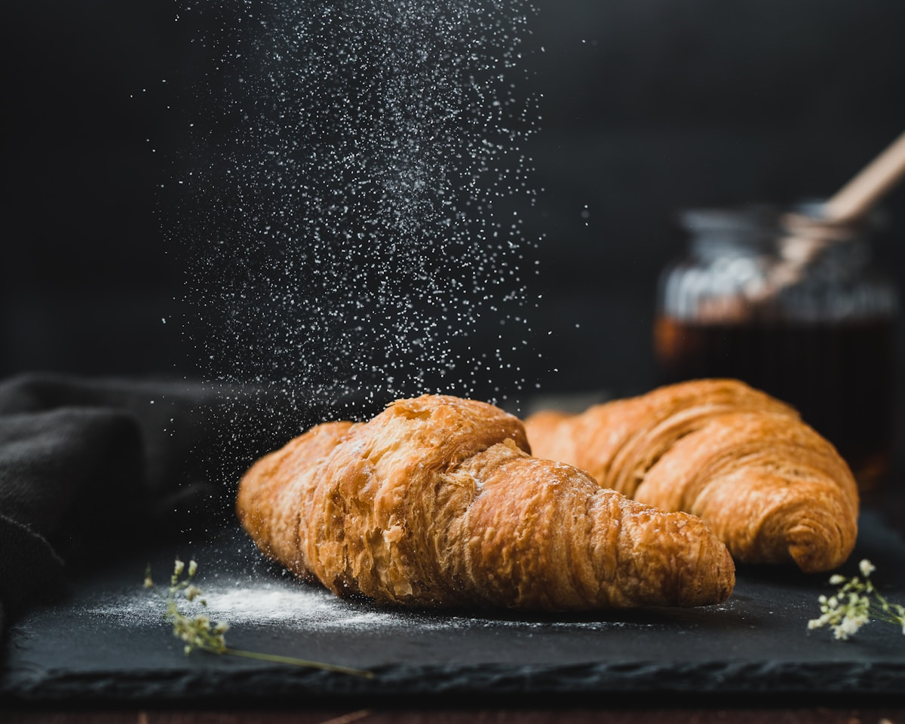
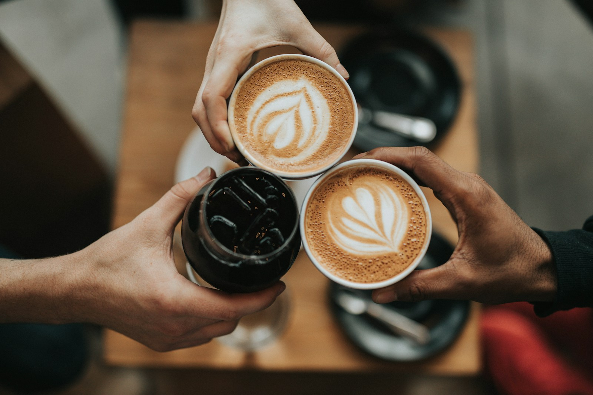
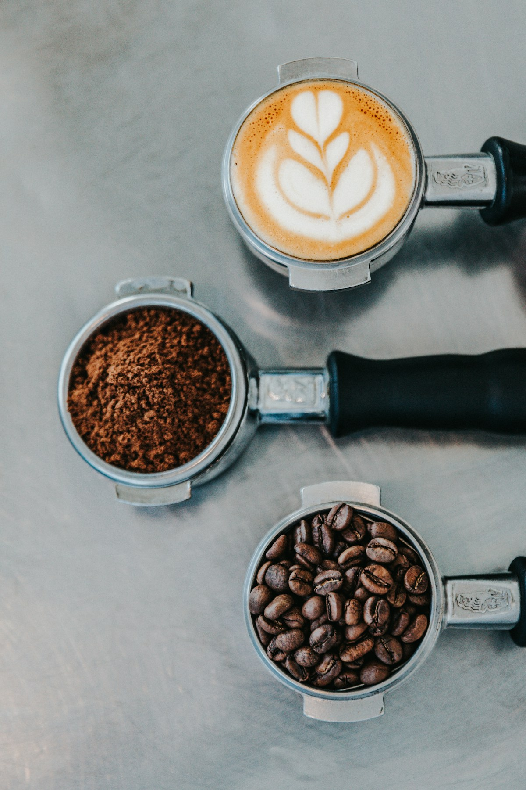

Now pouring
Ethiopia Yirgacheffe
Bright citrus, floral finish, single-origin espresso and pour-over all week.
Order pickup or delivery
Toronto · Queen West
The neighbourhood spot for slow coffee, house baking, and mornings done right.
Bright citrus, floral finish, single-origin espresso and pour-over all week.
Order pickup or delivery
Any drip or americano with an almond croissant before 10am, weekdays only.
Book a table



Cafe X was built from floor experience: the pace of a busy morning, the regular who wants their order remembered, and the manager who needs the line to move without losing warmth.
We designed the space and the service around that reality. Unhurried when you have time. Efficient when you don't.
Honey cinnamon latte
Double shot, steamed oat milk, house honey syrup, and a light dusting of cinnamon.
$6.25One location on Queen West. Walk in, grab a seat, or order ahead for pickup.
1 Queen WestInteractive map preview. Full address: 1 Queen West, Toronto, Ontario. Use the address and hours listed above for directions.